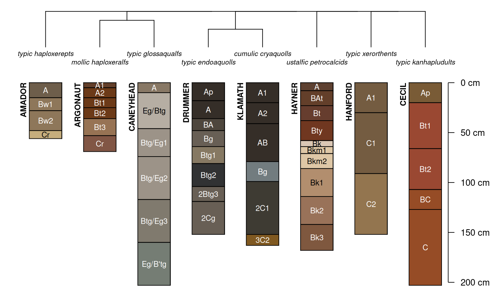

Plot a dendrogram based on the first 4 levels of Soil Taxonomy, with soil profiles hanging below. A dissimilarity matrix is computed using Gower's distance metric for nominal (KST.order = FALSE) or ordinal (KST.order = TRUE) scale variables, based on soil order, suborder, greatgroup, and subgroup taxa.
SoilTaxonomyDendrogram(
spc,
KST.order = TRUE,
rotationOrder = NULL,
level = c(soilorder = "soilorder", suborder = "suborder", greatgroup = "greatgroup",
subgroup = "subgroup"),
cluster.method = c("divisive", "agglomerative"),
cluster.args = list(),
name = "hzname",
name.style = "center-center",
id.style = "side",
n.depth.ticks = 6,
scaling.factor = 0.015,
cex.names = 0.75,
cex.id = 0.75,
width = 0.25,
y.offset = 0.5,
shrink = FALSE,
font.id = 2,
cex.taxon.labels = 0.66,
font.taxon.labels = 3,
dend.color = par("fg"),
dend.width = 1,
dend.type = c("phylogram", "cladogram"),
max.depth = ifelse(is.infinite(max(spc)), 200, max(spc)),
...
)a SoilProfileCollection object, typically returned by soilDB::fetchOSD
logical, encode / cluster taxa via ordinal factors, based on ordering within Keys to Soil Taxonomy
character vector of profile IDs with desired ordering of leaves in the dendrogram from left to right; exact ordering is not always possible
character. One or more site-level columns in spc. Default: "soilorder", "suborder", "greatgroup" and "subgroup"
Either "divisive" (cluster::diana(); default) or "agglomerative" (cluster::agnes())
Optional: additional arguments for cluster::diana() or cluster::agnes() cluster methods
column name containing horizon names
passed to aqp::plotSPC
passed to aqp::plotSPC
suggested number of ticks on the depth axis
scaling factor used to convert depth units into plotting units
character scaling for horizon names
character scaling for profile IDs
width of profiles
vertical offset between dendrogram and profiles
logical, should long horizon names be shrunk by 80% ?
integer, font style applied to profile id, default is 2 (bold)
numeric, character scaling for taxonomic information
integer, font style applied to taxa labels, default is 3 (italic)
dendrogram line color
dendrogram line width
dendrogram type, passed to plot.phylo(), either "phylogram" or "cladogram"
depth at which profiles are truncated for plotting
additional arguments to aqp::plotSPC
An invisibly-returned list containing:
dist: pair-wise dissimilarity matrix
order: final ordering of hclust leaves
This function looks for specific site-level attributes named: "soilorder", "suborder", "greatgroup", and "subgroup", or their NASIS physical column name analogues "taxorder", "taxsuborder", "taxgrtgroup", and "taxsubgrp". See https://github.com/ncss-tech/sharpshootR/blob/master/misc/soilTaxonomyDendrogram-examples.R for some examples.
The rotationOrder argument uses ape::rotateConstr() to reorder leaves within the hclust representation of the ST hierarchy. Perfect sorting is not always possible.
# built-in data, same as results from soilDB::fetchOSD()
data("OSDexamples")
# examples using first 8 profiles
# KST-style ordering
SoilTaxonomyDendrogram(
OSDexamples$SPC[1:8, ], width = 0.3, name.style = 'center-center',
KST.order = TRUE, axis.line.offset = -4, scaling.factor = 0.014
)
#> `axis.line.offset` is now deprecated, please use `depth.axis` argument
# classic ordering, based on nominal scale variables (un-ordered factors)
SoilTaxonomyDendrogram(
OSDexamples$SPC[1:8, ], width = 0.3, name.style = 'center-center',
KST.order = FALSE, axis.line.offset = -4, scaling.factor = 0.014
)
#> `axis.line.offset` is now deprecated, please use `depth.axis` argument

# adjust taxon label font and font size
SoilTaxonomyDendrogram(
OSDexamples$SPC[1:15, ], width = 0.3, name.style = 'center-center',
KST.order = FALSE, axis.line.offset = -4, scaling.factor = 0.014,
font.taxon.labels = 2, cex.taxon.labels = 0.55
)
#> `axis.line.offset` is now deprecated, please use `depth.axis` argument
# cladogram vs. dendrogram
# truncate profiles at 150cm
SoilTaxonomyDendrogram(
OSDexamples$SPC[1:16, ], width = 0.3, name.style = 'center-center',
KST.order = TRUE, axis.line.offset = -4, scaling.factor = 0.02,
font.taxon.labels = 1, cex.taxon.labels = 0.55,
dend.type = 'cladogram', max.depth = 150
)
#> `axis.line.offset` is now deprecated, please use `depth.axis` argument